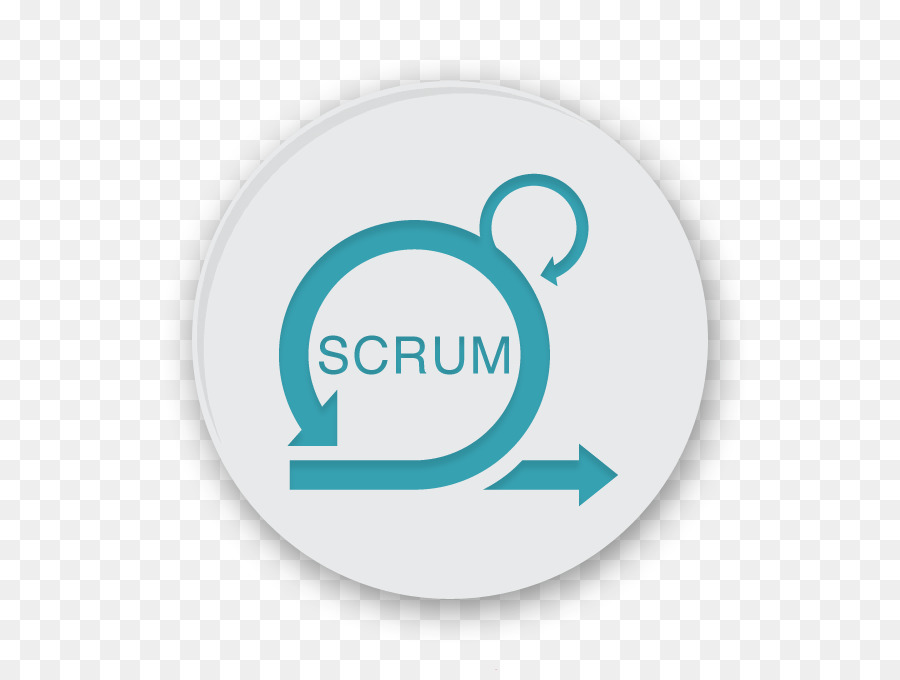

Meu nome é André Hiromi Arima, nascido e criado em Goiânia-GO. Descente de japoneses, por parte de pai, sou neto de japoneses (sansei) e por parte de mãe, sou bisneto de japoneses (yonsei).
Formado em Análise de Sistemas (Bacharel), sendo a base do curso toda voltada para administração empresarial. Recebi o reconhecimento como aluno destaque Iniciei com a função de caixa na Kumagai & Arima (empresa da minha família), porém nunca me prendi a funções, sempre disposto ao aprendizado, visando melhorias na empresa.
No meu estágio na Goiás Fomento fiz de tudo um pouco, formatações, manutenção, cadastros. No geral foco nas tecnologias da empresa. Fazendo uso de terminal services, ferramentas como VNC. Nesse periodo fiz curso de desenvolvimento em Java na 3 Way Network
Por um breve momento da minha vida (10 anos rs), atuei na área de música. Como autodidata aprendi a tocar violão, guitarra, baixo, além de compor e arranjar para bandas autorais. A maior grande valia chamada Chimpanzés de Gaveta. Além de realizar shows, compor, gravar, também dei aulas em escolas de música e particulares. Como professor, desenvolvi muito bem a comunicação, para rápido entendimento das deficiências e pontos de melhoria dos alunos, possibilitando assim, formas mais eficientes de sanar as dificuldades e facilitar a organização das teorias a serem repassadas.
Após esse periodo musical, fiz a união dos conhecimentos da tecnologia e como professor, para atuar como Analista de Suporte, tendo rápido feedback positivo tanto de clientes quanto de gestores, na SynData Sistemas. Trabalhei com migração de dados de outros sistemas para o ERP da empresa, gerando Documentos Fiscais como o SPED e o Sintegra. Nesse periodo fiz um curso de curta duração na IPOG sobre SPED.
Logo entrei numa empresa a nível Nacional, chamada Máxima Tech, onde pude apurar esses conhecimentos através de processos, proatividade e senso analítico, como ainda Analista de Suporte. Aproveitei para iniciar os conhecimentos com o Banco de Dados Oracle, fazendo um curso DBA Oracle na 3 Way Network. E com o tempo já estava fazendo analises mais detalhadas, e já realizando pequenos ajustes, em Triggers, Procedures e algumas consultas SQL.
Tendo em vista esse crescimento, no momento em que soube de um processo seletivo interno, me aprofundei nos estudos em C# através de cursos na plataforma Alura e outros pela internet. Então, fui aprovado para o cargo de Analista de Sistema, cuidando de soluções .Net e Banco de Dados Oracle, aprendendo um novo ponto de vista do produto e uma apuração de conhecimento mais técnica, aproveitando do conhecimento das Regras de Negócio, que obtive como suporte.
Desde então, venho em um estudo contínuo, dessa forma, aprofundando e ampliando meus conhecimentos. Como o Design Patterns, Arquitetura DDD, CRQS, e sempre "brincando" com o Front End com Angular, Boostrap, TypeScript, Razor e a insubstituível tríade HTML CSS JS.
Hoje sou GCS da principal Torre da Máxima Tech, contendo mais de 5 produtos. Utilizando de ferramentas Microsoft, realizando integrações com o Jira Software, GitLab. Além da manutenção e evolução dos produtos da empresa.

